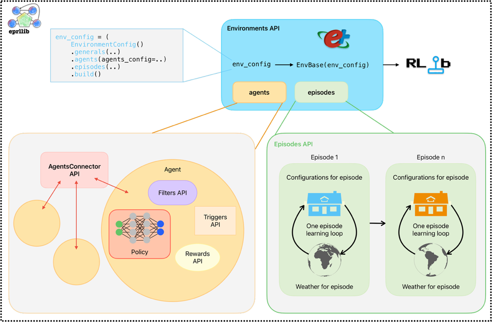
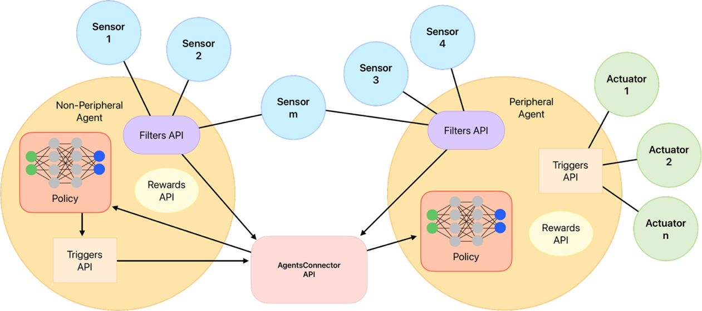
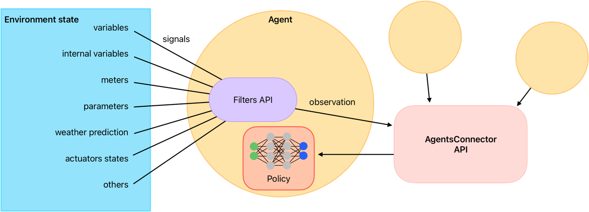
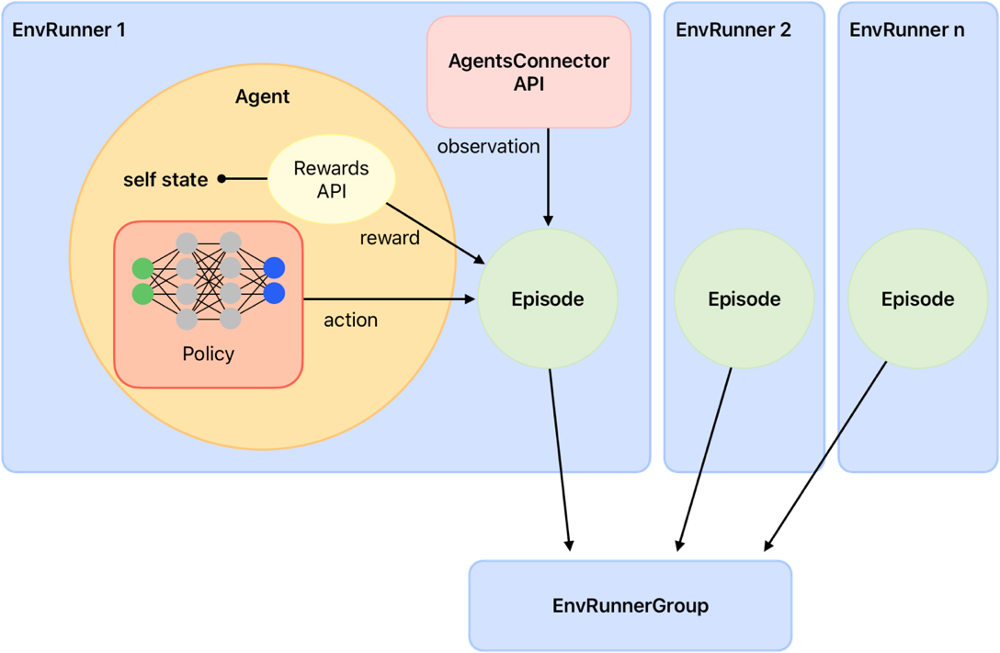

Key Concepts#
To configure and use eprllib effectively, it’s essential to understand its key components and how
they interact. This section provides an overview of the main concepts in eprllib, including the
environment, agents, connectors, episodes, and their integration with RLlib.
To see how all these components are related between them, the following image shows a schematic representation.
This image was create inspired by RLlib’s documentation but adapted to the specific components of eprllib.
{kind=link}

Figure 1: Schematic representation of eprllib components.#
You can see here clearly how all agents communicate between them trough the connector. In the following sections,
you will find a detailed description of each component and how to use it in eprllib. To see how to
customize these components, please refer to the API Reference section and the User Guide for each component. Also,
there are some examples of custom components in the Examples section that you can use as a reference.
The Environment#
The environment in eprllib represents the building simulation, powered by EnergyPlus.
It’s where the RL agents interact and learn.
The Environment class is the base class for creating RL environments in eprllib.
It handles the interaction with EnergyPlus and provides the necessary methods for RLlib
to interact with the environment. Unless you want to create a custom environment with
specific functionalities, you can use the default Environment class provided by eprllib.
The Environment must be registered with RLlib, which allows you to use it for training
your DRL agent. Follow the standard RLlib procedure
for registering custom environments as shown in the example below:
from eprllib.Environment.Environment import Environment
from ray.tune.registry import register_env
register_env("my_energyplus_env", lambda config: Environment(config))
To facilitate the configuration of the environment, eprllib provides several tools
and classes that allow you to define the environment’s parameters, the agents that will
interact with it, and the episodes that will be simulated. The main component is
the EnvironmentConfig class, which serves as the central configuration object for
the environment. It allows you to specify:
General Parameters:
Path to the EnergyPlus model file (
epjson_path).Path to the weather file (
epw_path).Output directory (
output_path).Other general settings (e.g.,
ep_terminal_output,timeout,evaluation).
Agent Specifications:
Details about the agents that will interact with the environment (see the “Agents” section below).
Connection Specifications:
Details about the connections between multiple agents in the environment (see the “Connections” section below).
Episode Specifications:
Details about the episodes that will interact with the environment (see the “Episodes” section below).
Here is a simple example of how to use the EnvironmentConfig class to configure the
generals parameters of the environment:
from eprllib.Env.EnvironmentConfig import EnvironmentConfig
env_config = EnvironmentConfig()
env_config.generals(
epjson_path="path/to/your/model.epJSON",
epw_path="path/to/your/weather.epw",
output_path="path/to/output",
ep_terminal_output=False,
timeout=10,
evaluation=False,
)
Remember that the EnvironmentConfig class must be build before being passed to the environment.
This is done using the build() method, which finalizes the configuration and prepares it for
use in the environment. Here is the code:
env_config_built = env_config.build()
For more information about the configuration of the environment, please refer to the API Reference section.
The Agents#
Agents are the decision-making entities in the RL process. In eprllib, agents interact with the EnergyPlus
environment to learn optimal control strategies. They are defined in the EnvironmentConfig object inside
the agents_config parameter.
To understand better how eprllib agents are concived, we can break down their configuration into three main
components:
Filters: the agent function that preprocess the observation information before to think in which action perform.ActionMappers: the agent function that maps from the policy into an adecuate actuator action.Rewards: the agent function that calculates the reward based on the agent’s actions and the environment’s state.
The following image shows how this three components are related between them and with the environment, and how is the flow of information between them:
{kind=link}

Figure 2: Schematic representation of the agent components and their interaction with the environment.#
As you can see, Connectors plays a fundamental role in the agent behaviour but is share by all the agents. Due that
it is explained in a separate section below. Also two different agents are shown in the image, one that
interacts with the environment through actuators (known as the worker agent) and
another that interacts only with the other agent through the connector (known as the manager agent).
In this last case, instead of an action, a goal is sent by the manager agent to the worker agent.
A constructor class called AgentSpec is used to define the specifications for an agent. This class
allows you to specify the observations, actions, rewards, filters, and action mappers for the agent.
Here’s a breakdown of the components of the AgentSpec:
observation: Whit the help of the constructor class
ObservationSpec, defines which variables of the EnergyPlus model are available to the agent’s components. Also, customized functions are provided here.action: Whit the help of the constructor class
ActionSpec, defines where the actions of the agent are applied, i.e. the actuators of the EnergyPlus model.reward: Whit the help of the constructor class
RewardSpec, defines the agentRewardfunction and its configuration.filter: Whit the help of the constructor class
FilterSpec, defines the agentFilterfunction and its configuration.action_mapper: Whit the help of the constructor class
ActionMapperSpec, defines the agentActionMapperfunction and its configuration.
To import the AgentSpec constructor class, you can use the following code:
from eprllib.Agents.AgentSpec import AgentSpec
Then you can use it to define your agent:
agent_spec = AgentSpec(
observation=...,
action=...,
filter=...,
action_mapper=...,
reward=...
)
In the following subsections you will find how to define each parameter of an agent, and import all the necessary classes.
Observation parameter config#
To configurate this parameter you need to use the ObservationSpec constructor class.
This class allows you to specify which variables of the EnergyPlus model are available
to the agent’s components. This constructor class provides the same structure of data
available in EnergyPlus and also extra functions that facilitates the observation process,
like weather prediction for the next day.
To import the ObservationSpec constructor class, you can use the following code:
from eprllib.Agents.ObservationSpec import ObservationSpec
Then you can use it to define your observation parameter into the agent configuration:
agent_spec = AgentSpec(
observation = ObservationSpec(
variables=[
("Site Outdoor Air Drybulb Temperature", "Environment"),
("Zone Mean Air Temperature", "Thermal Zone"),
],
meters=[
"Electricity:Building",
],
),
action=...,
filter=...,
action_mapper=...,
reward=...
)
To a detailled description of all the parameters of the ObservationSpec constructor class,
please refer to the API Reference section.
Action parameter config#
To configurate this parameter you need to use the ActionSpec constructor class. This class
allows you to specify which actuators of the EnergyPlus model could be handled by the agent.
To import the ActionSpec constructor class, you can use the following code:
from eprllib.Agents.ActionSpec import ActionSpec
Then you can use it to define your action parameter into the agent configuration:
agent_spec = AgentSpec(
observation = ObservationSpec(...),
action=ActionSpec(
actuators={
"Heating Setpoint Actuator": ("Schedule:Compact", "Schedule Value", "heating_setpoint"),
"Cooling Setpoint Actuator": ("Schedule:Compact", "Schedule Value", "cooling_setpoint"),
"Availability Actuator": ("Schedule:Constant", "Schedule Value", "HVAC_OnOff"),
},
),
filter=...,
action_mapper=...,
reward=...
)
To a detailled description of all the parameters of the ActionSpec constructor class,
please refer to the API Reference section.
Filter parameter config#
To configurate this parameter you need to use the FilterSpec constructor class. This class
allows you to specify which filter function should be used by the agent (that must be based on
the BaseFilter class) and its configuration.
A filter function is a function that preprocess the observation information before to think in which action perform. Filters are use to:
Normalize the observation data.
Extract features from the observation data.
Reduce the dimensionality of the observation data.
Any other preprocessing that you want to apply to the observation data before to think in which
The next image shows a schematic representation of the filter function and its role in the agent’s decision-making process, reciving raw information from the environment and sending the transformed information to the connector, how will be send the final policy observation to the policy function.
{kind=link}

Figure 3: Schematic representation of the filter function.#
To see how to create custom filter functions, please refer to User Guide for Filters API. Also, there are some examples of filters in the Examples section that you can use as a reference.
To import the FilterSpec constructor class, you can use the following code:
from eprllib.Agents.Filters.FilterSpec import FilterSpec
# Here also we import the BaseFilter class to show how to declare in the agent configuration.
from eprllib.Agents.Filters.BaseFilter import BaseFilter
Then you can use it to define your filter parameter into the agent configuration:
agent_spec = AgentSpec(
observation = ObservationSpec(...),
action=ActionSpec(...),
filter=FilterSpec(
filter_fn = BaseFilter, # Here you can use your custom filter function class that must be based on the BaseFilter class.
filter_fn_config = {
"some_parameter": "some_value",
}
),
action_mapper=...,
reward=...
)
To a detailled description of all the parameters of the FilterSpec constructor class,
please refer to the API Reference section.
Action mapper parameter config#
To configurate this parameter you need to use the ActionMapperSpec constructor class. This class
allows you to specify which action mapper function should be used by the agent. Also, it is necessary
to specify the action mapper function class (that must be based on the BaseActionMapper class) and its
configuration.
The action mapper function is a function that have two main objectives:
Map the policy antion into an actuator action.
Define the action space of the agent.
In the case of manager agents or other heriachical configuration, the ActionMapper class also define
methods to transform the policy action into a goal. In the Figure 4 you can see a schematic representation
of the action mapper function and its role in the agent’s decision-making process.

Figure 4: Schematic representation of the action mapper function.#
To import the ActionMapperSpec constructor class, you can use the following code:
from eprllib.Agents.ActionMappers.ActionMapperSpec import ActionMapperSpec
# Here also we import the BaseActionMapper class to show how to declare in the agent configuration.
from eprllib.Agents.ActionMappers.BaseActionMapper import BaseActionMapper
Then you can use it to define your action mapper parameter into the agent configuration:
agent_spec = AgentSpec(
observation = ObservationSpec(...),
action=ActionSpec(...),
filter=FilterSpec(...),
action_mapper=ActionMapperSpec(
action_mapper=BaseActionMapper, # Here you can use your custom action mapper function class that must be based on the BaseActionMapper class.
action_mapper_config={
"some_parameter": "some_value",
}
),
reward=...
)
To a detailled description of all the parameters of the FilterSpec constructor class,
please refer to the API Reference section.
Reward parameter config#
To configurate this parameter you need to use the RewardSpec constructor class. This class
allows you to specify which reward function should be used by the agent (that must be based on
the BaseReward class) and its configuration.
The reward function is a function that calculates the reward based on:
present observation (after filter),
action (before action mapper),
next timestep observation (after filter),
terminated flag, and
truncated flag.
Note
The observations that input the reward function are the observations after the filter, and the action is the action before the action mapper. Consider this to avoid confusion when you are creating your custom reward function.
The reward function sends the reward signal together with the observation, terminateds and truncateds flags, and other infos to RLlib, wo manage the episode process and the learning of the agent. In the Figure 5 you can see a schematic representation of the reward function and its role in the agent’s decision-making process.
{kind=link}

Figure 5: Schematic representation of the reward function.#
To import the RewardSpec constructor class, you can use the following code:
from eprllib.Agents.Rewards.RewardSpec import RewardSpec
# Here also we import the BaseReward class to show how to declare in the agent configuration.
from eprllib.Agents.Rewards.BaseReward import BaseReward
Then you can use it to define your reward parameter into the agent configuration:
agent_spec = AgentSpec(
observation = ObservationSpec(...),
action=ActionSpec(...),
filter=FilterSpec(...),
action_mapper=ActionMapperSpec(...),
reward=RewardSpec(
reward_fn = BaseReward, # Here you can use your custom reward function class that must be based on the BaseReward class.
reward_fn_config = {
"some_parameter": "some_value",
}
)
)
To a detailled description of all the parameters of the RewardSpec constructor class,
please refer to the API Reference section.
The Connector#
The Connector function is a class based on BaseConnector that define how agents
interact between them. When eprllib was born, the main goal was to create a framework
that allows multiple agents to interact in the same environment, and this Conector class emerge.
With the evolve of the library, the Connector was transformed to provides the index of names for
each agent onbservation space. Due that, it must be defined in concordance with all the Filter
functions of all agents. This could be a bit tricky, but it is a powerful tool that allows to create
complex interactions between agents.
To import the BaseConnector class, you can use the following code:
from eprllib.Agents.Connectors.BaseConnector import BaseConnector
Then you can use it to define your connector parameter into the agent configuration:
env_config = EnvironmentConfig().connector(
connector_fn=BaseConnector, # Here you can use your custom connector function class that must be based on the BaseConnector class.
connector_fn_config={
"some_parameter": "some_value",
}
)
To learn how to create custom connectors, please refer to User Guide for Connectors API. Also, there are some examples of connectors in the Examples section that you can use as a reference.
Episodes#
The Episodes class of eprllib must not be confuse with Episodes defined in RLlib. Here, the
intention of the Episodes class is to define the configuration of each episode during training while in
RLlib is how the information (obs,action,rew,done) is organized to learn.
To configurate this parameter you need to specify the custom Episode class (or the DefaultEpisode) and
its configuration as follows:
env_config = EnvironmentConfig().episodes(
episode_fn = DefaultEpisode, # Here you can use your custom episode function class that must be based on the BaseEpisode class.
episode_fn_config = {
"some_parameter": "some_value",
}
)
To learn how to create custom episodes, please refer to User Guide for Episodes API. Also, there are some examples of episodes in the Examples section that you can use as a reference.
Integration with RLlib#
eprllib is designed to work seamlessly with RLlib, a powerful library for reinforcement learning.
After configure your environment and agents using the tools provided by eprllib, you can easily
integrate it with RLlib to train your DRL agents. There are three steps to achieve this integration:
Register the
Environmentclass with RLlib.Build the
EnvironmentConfigwith thebuild()method.Use the registered environment and the built configuration in your RLlib training configuration.
Here is a simple example of how to integrate eprllib with RLlib:
import ray
from ray.tune import register_env
from eprllib.Env.Environment import Environment
# Before register the environment, you need to init ray.
ray.init()
# Register the environment
register_env(name="EPEnv", env_creator=lambda args: Environment(args))
# Configure the environment and build it.
env_config = EnvironmentConfig(...).build()
# Use the environment in your RLlib configuration
config = ppo.PPOConfig()
config = config.environment(
env = "EPEnv", # <- The name of the registered environment.
env_config = env_config # <- The built configuration of the environment.
)
Also RLlib is used to define the policy that the agent will use to learn. The policy is defined in the RLlib configuration and it is based on the observations and actions defined in the agent configuration. The policy is the function that takes the observations and outputs the actions that the agent will perform in the environment. The policy is trained using the reward signal provided by the reward function defined in the agent configuration.
To see how to define the policy and the training configuration in RLlib, please refer to the RLlib documentation.